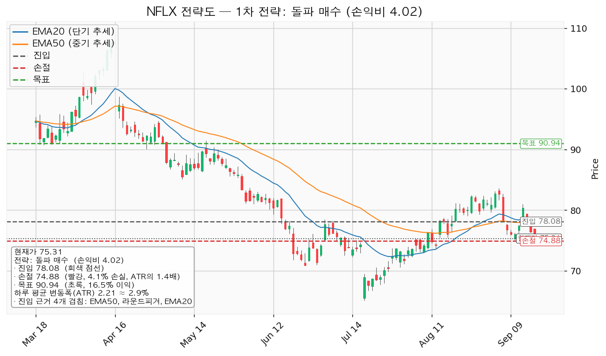
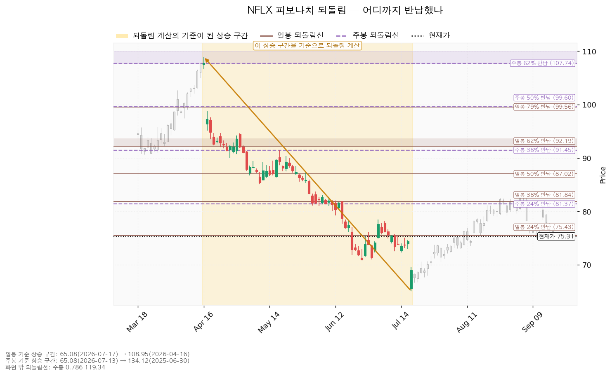
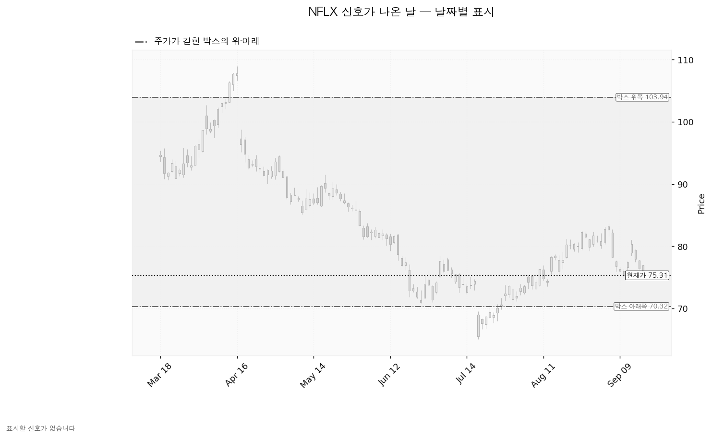
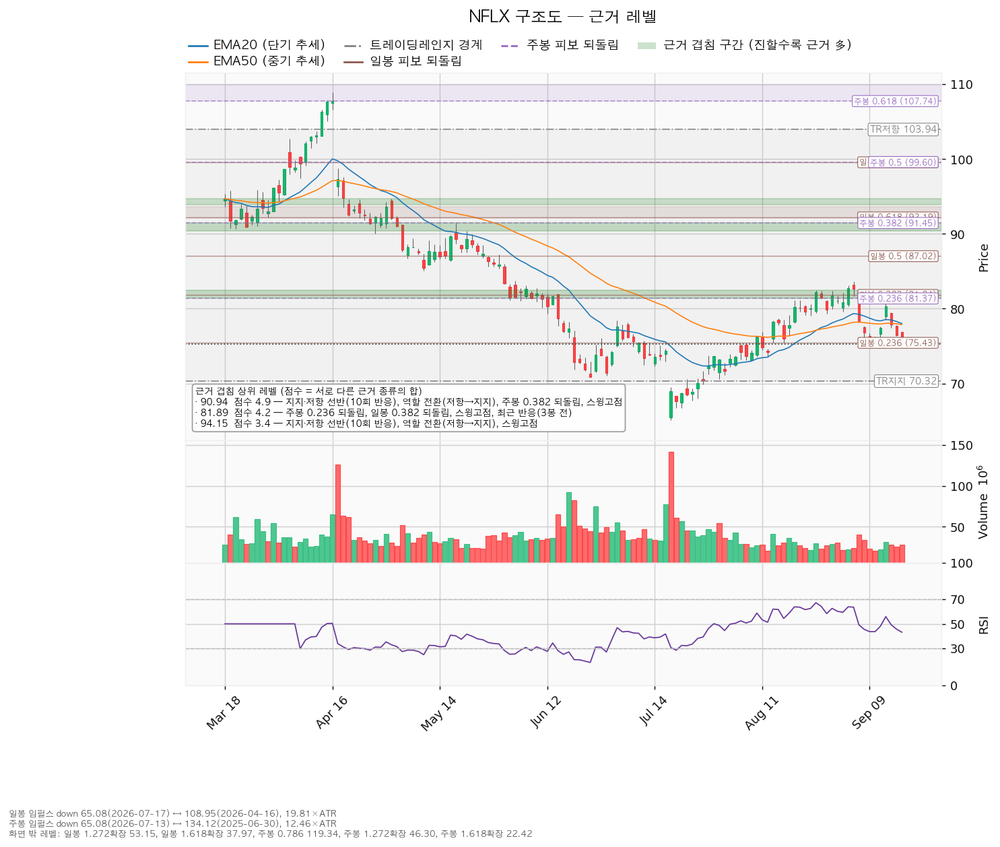

넷플릭스(NFLX)는 월정액 구독과 광고 요금제로 영화·드라마를 인터넷으로 내보내는 미국 스트리밍 기업이며, 직접 제작한 콘텐츠와 외부에서 사들인 콘텐츠를 함께 서비스합니다.
| 구분 | 가격 | 판정 방식 | 현재 상태 |
|---|---|---|---|
| 회복선 | 75.72달러 (+0.54%) | 일봉 종가로 회복한 뒤 되돌림에서 지지되는지 | 회복 대기 — 9/17 종가 75.31로 바로 아래 |
| 대표 셋업 진입선 | 78.08달러 (+3.68%, 하루 변동폭의 1.25배 위) | 일봉 종가 돌파 | 미돌파 — 20일·50일 이동평균선(각각 78.01·77.87)이 이 구간에 모여 있음 |
| 집행 손절 | 74.88달러 (-0.57%) | 장중 저가 터치 | 추가분 미진입이면 의미 없음 — 78.08 종가 돌파로 들어간 경우에만 작동 |
| 관망 종료 기준 | 74.00달러 (-1.74%) | 일봉 종가로 아래 마감 | 유지 중 — 9/17 종가 75.31, 저가 75.30 |
| 확인선 | 90.94달러 (+20.75%) | 일봉 종가 돌파 후 되돌림 지지 확인 | 미돌파 |
| 폐기선 | 70.32달러 (-6.63%, 하루 평균 변동폭의 2.25배 아래) | 이탈 후 3거래일 내 종가 회복 실패(또는 그 전에 68.10 아래 종가 마감) + 반등에서 저항으로 확인 | 유지 중 — 거리가 3배 안으로 들어와 이번에는 실무상 작동하는 기준입니다 |
① 당시 걸었던 조건의 성적표. 직전 리포트는 "81.92달러를 일봉 종가로 넘기면 돌파 매수 진입"을 걸었고, 그 조건은 충족되지 않았습니다. 그 뒤 종가는 9/16 76.41달러, 9/17 75.31달러로 오히려 내려갔습니다(9/16 이후 최고 종가 76.41). 진입이 없었으므로 직전 리포트의 집행 손절 77.46달러는 판정 대상이 아닙니다 — 9/16 저가 76.31, 9/17 저가 75.30으로 그 가격 아래를 지났지만, 들어간 물량이 없어 손절될 것도 없었습니다. 목표 90.94달러에도 닿지 않았습니다.
직전 리포트의 관망 종료 기준 75.43달러는 9월 17일 종가 75.31로 이탈했습니다. 직전 리포트가 "이 가격을 일봉 종가로 잃으면 추가 매수 대기를 끝낸다"고 적어 둔 조건이 그대로 성립한 것이며, 그래서 이번 리포트는 81.92 대기를 이어가지 않고 좌표를 다시 잡았습니다. 폐기선 70.32달러는 이탈이 없었습니다.
② 좌표가 어떻게·왜 움직였나.
| 항목 | 2026-09-16 | 2026-09-18 | 왜 움직였나 |
|---|---|---|---|
| 회복선 | 78.32 | 75.72 | 가격이 77.90 → 75.31로 내려오면서, 현재가 바로 위의 겹침이 이평 구간(78.04~78.49)에서 일봉 24% 되돌림 구간(75.43~76.00)으로 바뀌었습니다 |
| 대표 셋업 진입 | 81.92 | 78.08 | 현재가가 내려오자 그 위에서 가장 먼저 만나는 두꺼운 겹침이 77.87~78.44 구간(EMA50·라운드피겨·EMA20·스윙고점, 2.8점)이 됐습니다 |
| 집행 손절 | 77.46 (1.93 ATR) | 74.88 (1.44 ATR) | 진입 아래 첫 겹침 구간(75.43~76.00) 하단 아래로 밀어낸 값입니다 |
| 목표 · 확인선 | 90.94 | 90.94 | 같습니다 — 같은 겹침 구간(90.41~91.48, 4.9점) 그대로입니다 |
| 관망 종료 기준 | 75.43 | 74.00 | 75.43이 종가로 이탈돼, 그 아래 첫 겹침 구간(74.00~75.03)의 하단으로 내려갔습니다 |
| 폐기선 | 70.32 (3.28 ATR 아래) | 70.32 (2.25 ATR 아래) | 가격만 그대로이고 현재가가 내려와 거리가 좁혀졌습니다. 직전에는 3배를 넘어 실무상 쓸 수 없다고 적었으나 이번에는 쓸 수 있는 거리입니다 |
| 손익비 | 2.03 (손절 1.93 ATR) | 4.02 (손절 1.44 ATR) | 목표는 같은데 진입가가 3.84달러 내려가 상방 폭이 넓어졌고, 손절 폭도 4.46 → 3.20달러로 좁아졌습니다 |
| 하루 평균 변동폭 / RSI | 2.31 / 49.24 | 2.21 / 43.13 | 이틀 연속 음봉으로 RSI가 중립 아래로 내려왔습니다 |
③ 판단이 바뀐 곳. 결론의 성격은 직전과 같습니다 — 신규 추격은 하지 않고 종가 돌파를 기다리며, 보유 10주는 유지합니다. 바뀐 것은 기다리는 가격(81.92 → 78.08)과 그때 받는 손익비(2.03 → 4.02)입니다. 같은 목표를 더 낮은 가격에 사게 되므로 조건 자체는 좋아졌지만, 그 개선은 이틀간 -3.32% 하락으로 진입가가 내려온 결과입니다. 아래쪽 겹침이 한 칸씩 무너지며 대기 좌표가 따라 내려오고 있다는 사실은 그대로 적어 둡니다. 직전 리포트에서 정정할 오류는 없습니다.
| 항목 | 값 |
|---|---|
| 보유 수량 | 10주 |
| 평단 | 88.9525달러 (2026-07-01 매수, 체결 1건) |
| 현재가 | 75.31달러 |
| 평가손익 | -136.43달러 (-15.34%) |
| 실현손익 | 0.00달러 |
이 물량은 이 리포트의 셋업으로 들어간 것이 아니어서 셋업 손절(74.88)이 적용되지 않습니다. 보유분의 정리 기준은 두 가지입니다 — 위로는 목표 90.94달러(평단 대비 +2.23%, +19.88달러)에서 함께 정리하고, 아래로는 아래 세 번째 시나리오의 폐기 조건(70.32 이탈 후 회복 실패 + 반등에서 저항 확인)이 성립할 때 정리합니다. 이번에는 폐기선이 현재가에서 하루 평균 변동폭의 2.25배 아래라 가격 기준으로도 판정할 수 있습니다.
| 항목 | 값 |
|---|---|
| 현재가 | 75.31달러 (2026-09-17 종가) |
| 단기 이평(EMA20) | 78.01달러 — 현재가가 아래 |
| 중기 이평(EMA50) | 77.87달러 — 현재가가 아래 |
| RSI(14) | 43.13 (0~100 사이 과열·침체 지표, 50 아래는 약세 쪽) |
| 하루 평균 변동폭(ATR) | 2.21달러 (주가의 2.9%) |
| 횡보 박스 | 70.32 ~ 103.94달러 (유효) |
| 최근 신호 | 없음 — 이번 산출에서 속임수 하락·강세 신호 등 표시할 신호가 잡히지 않았습니다 |
| 국면 후보 | 미확정 — 하락 이탈 후 형성된 박스로, 매집인지 재분산인지 갈리지 않았습니다 |
| 다음 실적 | 2026-10-21 |
박스는 어느 구간을 본 것인가. 조회한 일봉 753개 중 최근 180봉을 본 판정입니다. 40봉·90봉·180봉을 모두 시험해 40봉은 가격이 박스 안에 머문 비율 60%에 한쪽 방향성이 0.794로 강해 인정되지 않았고, 90봉은 머문 비율 77.8%·방향성 0.342로 유효했으며, 180봉이 머문 비율 95%·방향성 0.371로 가장 잘 지켜 채택됐습니다.
박스 안쪽에서 무슨 일이 있었나. 같은 사각형이라도 매집과 재분산은 안쪽 거래량과 저점 흐름으로 갈립니다.
① 상승 전환 75.72달러를 종가로 회복해 지지된 뒤 90.94달러를 종가로 넘기는 경로입니다. 구조로는 속임수 하락 확인 → 강세 신호 → 되돌림 지지 → 상승 국면 순서입니다. 행동은 78.08 종가 돌파 확인 후 추가 진입이고, 90.94를 종가로 넘기면 그 위 구간은 새 셋업으로 다시 잡습니다.
② 횡보 지속 70.32달러를 지키면서 90.94달러 아래에서 박스를 이어가는 경로입니다. 직전 박스에서 내려오며 쌓인 매물을 소화하는 데 시간이 걸리는 국면이며, 그 자체는 나쁜 신호가 아닙니다. 추가 매수는 보류하고 아래 세 관측치가 바뀌는지 추적합니다.
③ 시나리오 폐기 70.32달러 이탈 후 3거래일 내 종가 회복에 실패하거나 그 전에 68.10달러 아래로 종가 마감하고, 이후 반등이 70.32에서 막힐 때입니다. 매집이 아니라 재분산이었다는 뜻이며 추가 저점 갱신 가능성이 열립니다. 행동은 보유 10주를 포함한 포지션 정리 후, 새 매도 절정과 새 박스가 만들어질 때까지 관망입니다.
국면 판정은 횡보 레인지(구조 유지 — 하단 사수 조건부)입니다. 개별 종목은 매수만 다루며 두 가지가 산출됐습니다.
| 항목 | 돌파 매수 (대표) | 눌림목 매수 |
|---|---|---|
| 진입 | 78.08달러 (+3.68%) | 74.52달러 (-1.05%) |
| 진입 근거 겹침 | 4개 겹침 (2.8점) — EMA50, 라운드피겨, EMA20, 스윙고점 | 3개 겹침 (2.3점) — 라운드피겨, 스윙저점, 최근 반응(5봉 전) |
| 집행 손절 | 74.88달러 — 겹침 구간(75.43~76.00) 바로 아래 | 69.45달러 — 겹침 구간(70.00~70.86) 바로 아래 |
| 손절 폭 | -4.10% (1.44 ATR) | -6.80% (2.29 ATR) |
| 목표 | 90.94달러 — 전량 청산 | 81.89달러 — 전량 청산 |
| 목표 근거 겹침 | 4.9점 — 10회 반응 선반, 역할 전환(저항→지지), 주봉 38% 되돌림, 스윙고점 | 4.2점 — 주봉 24% 되돌림, 일봉 38% 되돌림, 스윙고점, 최근 반응(3봉 전) |
| 손익비 | 4.02 (손절 1.44 ATR) | 1.46 (손절 2.29 ATR) |
| 엣지 종류 | 모멘텀 — 저항을 돌파하면 그 방향이 이어진다는 전제. 자주 틀리고 소수가 크게 맞는 유형입니다(이 유형의 일반적 성격이며 이 엔진에서 측정한 값이 아닙니다) | 평균회귀 — 지지로 눌릴 때 산다는 전제. 승률이 높고 이익 폭이 작은 유형이며, 저항에서 전량 청산이 정합적입니다 |
| 구조 증명도 | 돌파 확인형 (가중치 1.0) | 선취형(구조 미확인) (가중치 0.7) |
| 비중 | 계좌의 24.4% → 13%로 제한 | 계좌의 14.7% → 13%로 제한 |

손익비는 손절 폭과 함께 봅니다. 돌파 매수의 손절 74.88달러는 겹침 구간 75.43~76.00의 바깥으로 밀어낸 구조적 손절이므로, 손익비 4.02는 손절을 하루 변동폭 안으로 조여 만든 숫자가 아니라 구조 기준 값입니다. 다만 그 구조적 손절의 폭이 마침 1.44 ATR로 좁게 나왔고, 이는 진입 78.08 바로 아래에 겹침 구간이 붙어 있어서 생긴 결과입니다. 진입선과 그 아래 지지가 2.65달러밖에 떨어져 있지 않다는 뜻이며, 돌파 후 되밀림이 얕게만 와도 손절에 닿을 수 있습니다.
대표 셋업을 이렇게 고른 이유. 선정 기준은 손익비 단독이 아니라 손익비 × 구조 증명도 × 근거 겹침입니다. 이번에는 돌파 매수가 손익비(4.02 대 1.46)와 구조 증명도(돌파 확인형 1.0 대 선취형 0.7), 진입 근거 겹침(2.8점 대 2.3점)에서 모두 앞서 선정됐습니다. 저항을 종가로 넘긴 뒤 들어가므로 진입가는 불리하지만 구조가 먼저 증명된다는 것이 이 셋업의 성격입니다. 눌림목 매수는 진입가가 현재가보다 1.05% 아래라 유리해 보이지만, 손절을 박스 하단 아래(69.45)까지 내려야 해서 손절 폭이 2.29 ATR로 넓어지고 목표도 81.89달러로 낮습니다. 손익비 1.46은 1을 넘으므로 보류 대상은 아니나, 이 리포트의 집행 계획에는 쓰지 않습니다.
집행 계획(대표 셋업). 78.08달러 일봉 종가 돌파 확인 → 진입 → 목표 90.94달러에서 전량 청산, 트레일링은 걸지 않습니다. 진입에서 목표까지는 하루 평균 변동폭의 5.81배로 폭이 있으나, 집행 정책이 목표 전량 청산으로 고정돼 있어 다단 청산을 쓰지 않습니다. 90.94를 일봉 종가로 넘기는 경우는 이 포지션의 연장이 아니라 새 셋업으로 다시 잡습니다. 이 손절은 새로 사는 물량에만 적용되고, 기존 10주는 위 보유 현황의 기준을 따릅니다.
참고로 엔진은 분할 청산 수치도 함께 산출했습니다 — 돌파 매수는 80.00달러에서 절반 익절 후 잔여분 손절을 진입가 78.08달러로 올리는 경우 전 구간 손익비 2.31, 절반 익절 뒤 본전에 걸릴 때의 하한 손익비 0.30입니다(눌림목 매수는 75.72달러 절반 익절 기준 전 구간 0.85, 하한 0.12). 이 리포트의 집행 계획은 분할 없이 목표 전량 청산이므로 위 수치를 계획으로 쓰지 않습니다.
비중. 1회 매매에서 계좌의 1%를 잃는 것을 한도로 하면 손절 폭 4.10%에 대응하는 포지션은 계좌의 24.4%가 됩니다. 한 종목에 계좌의 13%를 넘게 싣지 않으므로 13%로 제한하며, 그만큼 이 매매에서 지는 위험도 계좌의 1%보다 작아집니다. 이미 10주를 들고 있으므로 기존 물량 평가액을 포함해 13%를 넘지 않도록 계산합니다.
도구 적합성 점검. 하루 평균 변동폭이 주가의 2.9%로 8%를 넘지 않고 손절 폭은 그 1.44배입니다. 손절 폭이 하루 변동폭의 1.5배를 밑돌므로, 돌파 직후 이틀 연속 되밀림만으로도 체결될 수 있습니다. 비중 상한 13%를 그대로 지키고, 그 아래에서 시작하는 것도 이 셋업에서는 합리적입니다. 이 셋업의 시계는 수 주이고 아래 컨센서스는 12개월 기준이므로, 두 결론이 갈려도 모순이 아닙니다.
현재가 75.31달러는 추격이 문제가 되는 자리가 아닙니다 — 대표 셋업의 진입가가 현재가보다 3.68% 위에 있어 기다렸다 들어가는 계획이기 때문입니다. 대기할 좌표는 둘입니다.
일봉과 주봉 모두 계산 가능한 기준 구간이 있었습니다. 방향은 하락 구간이며, 되돌림선은 아래에서 위로 올라올 때의 저항 후보로 읽습니다.
| 기준 | 기준 구간 | 주요 되돌림선 |
|---|---|---|
| 일봉 | 108.95(2026-04-16) → 65.08(2026-07-17), 하루 변동폭의 19.81배 | 24% 75.43 / 38% 81.84 / 50% 87.02 / 62% 92.19 / 79% 99.56 |
| 주봉 | 134.12(2025-06-30) → 65.08(2026-07-13), 주간 변동폭의 12.46배 | 24% 81.37 / 38% 91.45 / 50% 99.60 / 62% 107.74 / 79% 119.34 |
현재가 75.31달러는 일봉 24% 되돌림(75.43) 바로 아래로 내려왔습니다. 4월 고점에서 7월 저점까지의 하락분 중 되돌린 몫이 24%에 못 미치는 상태입니다. 위쪽 81.37~82.46 구간은 주봉 24% 되돌림·일봉 38% 되돌림·스윙고점이 겹친 4.2점짜리 자리이고 3봉 전에 실제로 가격이 되돌아선 자리이며, 눌림목 매수의 목표(81.89)가 여기 놓입니다. 대표 셋업의 목표 90.94 부근에는 주봉 38% 되돌림(91.45)이 함께 있습니다.

이번 산출에서도 표시할 신호가 없습니다. 속임수 하락·강세 신호 같은 날짜 있는 신호가 하나도 잡히지 않았고, 아래 차트에도 그 사실이 그대로 나옵니다. 세 번째 리포트 연속으로 신호 목록이 비어 있으며, 국면 후보가 "미확정"으로 나온 것과 같은 맥락입니다. 매집으로 읽을 날짜 있는 근거는 현재 없습니다.

점수는 서로 다른 근거 종류의 가중치 합입니다. 같은 종류가 여러 개 붙어도 한 번만 더해지므로, 점수가 높을수록 성격이 다른 증거가 여러 갈래로 모인 자리입니다.
| 가격 | 점수 | 겹치는 근거 |
|---|---|---|
| 90.94달러 (90.41~91.48) | 4.9 | 10회 반응 선반, 역할 전환(저항→지지), 주봉 38% 되돌림, 스윙고점 |
| 81.89달러 (81.37~82.46) | 4.2 | 주봉 24% 되돌림, 일봉 38% 되돌림, 스윙고점, 최근 반응(3봉 전) |
| 119.47달러 | 3.7 | 주봉 79% 되돌림, 10회 반응 선반, 역할 전환(저항→지지) |
| 94.15달러 | 3.4 | 10회 반응 선반, 역할 전환(저항→지지), 스윙고점 |
| 91.96달러 | 3.2 | 12회 반응 선반, 역할 전환(지지→저항), 일봉 62% 되돌림 |
| 70.39달러 (70.00~70.86) | 3.0 | 라운드피겨, 박스 하단 지지, 스윙저점 |
| 78.08달러 (77.87~78.44) | 2.8 | EMA50, 라운드피겨, EMA20, 스윙고점 |
| 99.58달러 | 2.5 | 일봉 79% 되돌림, 주봉 50% 되돌림 |
| 85.30달러 | 2.4 | 스윙저점, 9회 반응 선반 |
| 74.52달러 (74.00~75.03) | 2.3 | 라운드피겨, 스윙저점, 최근 반응(5봉 전) |
| 75.72달러 (75.43~76.00) | 2.1 | 일봉 24% 되돌림, 라운드피겨, 최근 반응(5봉 전) |
목표 90.94달러는 위쪽에서 근거가 가장 두꺼운 저항이며, 과거 저항이던 자리가 지지로 바뀐 이력까지 붙어 있습니다. 아래쪽에서 현재가가 지금 밟고 있는 지지는 74.00~75.03 구간이고, 그 아래 두꺼운 지지는 70.00~70.86 구간입니다. 두 구간 사이는 3.14달러(하루 평균 변동폭의 1.42배)로, 9/16 리포트 시점의 빈 구간보다 좁아졌습니다.

| 항목 | 값 |
|---|---|
| 후행 PER | 23.68배 (후행 EPS 3.18달러) |
| 선행 PER | 19.71배 (내년 예상 EPS 3.82달러) |
| 이익 성장률 | 올해 +41.67% (예상 EPS 3.58달러), 내년 +6.47% |
| 목표주가 | 평균 93.88달러 / 최저 70.00달러 / 최고 135.00달러, 애널리스트 45명 |
| 90일간 추정치 변화 | 올해 -0.2%, 내년 -0.3% |
| 추천등급 | 매수 |
| 현금흐름(2025-12-31 결산) | 영업현금흐름 +101.5억 달러, 잉여현금흐름 +94.6억 달러, 설비투자 6.88억 달러(+56.6%) |
배수는 둘 다 봅니다. 후행 23.68배와 선행 19.71배의 차이는 올해 이익이 +41.67% 늘어나는 구간이라 생기는 것입니다. 후행 배수 하나만 들고 비싸다·싸다를 말할 수 없는 자리이며, 내년 성장률은 +6.47%로 올해보다 완만합니다. 두 배수 모두 직전 리포트(24.50배·20.39배)보다 낮아졌는데, 이익 추정치는 그대로이고 가격만 -3.32% 내려간 결과입니다.
목표주가는 분포로 봅니다. 현재가 75.31달러는 최저 목표 70.00달러(-7.05%)보다 위, 평균 93.88달러(+24.66%)보다 아래에 있습니다. 45명 전원의 목표 아래에 있는 상황은 아니지만, 최저 목표까지의 여유는 직전 리포트의 -10.14%에서 -7.05%로 줄었습니다. 최고 목표는 135.00달러(+79.26%)로 분포가 넓습니다.
하락의 성격. 90일 동안 컨센서스 EPS는 올해 -0.2%, 내년 -0.3%로 제자리인데 가격은 4월 108.95달러에서 7월 65.08달러까지 내려왔고 이후에도 75달러 부근입니다. 추정치가 함께 내려간 사업 악화가 아니라 배수 수축 쪽입니다. 사업 악화로 판정하려면 10/21 실적에서 추정치가 실제로 내려가는 것을 확인해야 합니다.
현금흐름의 성격. 영업현금흐름과 잉여현금흐름 모두 플러스이므로 적자 문제는 없습니다. 설비투자가 4.40억 → 6.88억 달러로 +56.6% 늘었지만 영업현금흐름 101.5억 달러에 비하면 작은 규모이며, 잉여현금흐름 94.6억 달러가 그대로 남습니다.
상승 여력의 분해. 컨센서스 평균 93.88달러를 내년 예상 EPS 3.82달러로 나누면 내재 선행 배수는 24.60배입니다. 현재 선행 배수 19.71배보다 높으므로 이 목표는 이익 증가(+6.47%)보다 배수 확장에 기댄 값입니다. 이 리포트의 목표 90.94달러는 내재 배수 23.83배로 같은 성격이되 폭이 작습니다.
주도주 여부는 아직 아닙니다. ① 직전 박스(95.67~129.53)에서 아래로 이탈한 뒤 그 구간을 되찾지 못했습니다. ② 박스 안 저점은 절상이지만 지지 테스트 거래량이 늘고 있어 내부 판정이 중립입니다. ③ 상승봉 대 하락봉 거래량 우위가 1.15배로 미미하고, 날짜 있는 강세 신호가 없습니다. ④ 9/14 종가 80.32달러로 EMA 구간 위로 올라섰다가 사흘 만에 75.31까지 되밀려, 78달러 이평 구간을 위에서 지켜내지 못했습니다. 90.94달러를 종가로 넘기고 되돌림에서 지지되는 것이 확인될 때 주도주 후보로 재평가합니다.
| 날짜 | 이벤트 | 그때 볼 수치 |
|---|---|---|
| 2026-10-21 | 3분기 실적 발표 | 올해 EPS 컨센서스 3.58달러 대비 실제치와 가이던스, 내년 EPS 컨센서스 3.82달러의 실적 후 방향, 영업현금흐름(직전 결산 101.5억 달러)과 설비투자 증가율(+56.6%)의 지속 여부 |
날짜가 붙은 확인 이벤트는 이번 조회에서 실적일 하나입니다. 그 외 판정은 모두 종가 기준 가격 조건입니다.
가격 쪽 무효화는 폐기선 70.32달러이고, 이번에는 현재가에서 하루 평균 변동폭의 2.25배 아래라 실무상 판정에 쓸 수 있습니다(직전 리포트에서는 3.28배로 너무 멀어 쓰지 못한다고 적었습니다).
가격과 별개로 논지 쪽 무효화를 겁니다. 2026-10-21 실적에서 내년 EPS 컨센서스가 지금의 3.82달러 아래로 내려가면, 이 리포트가 "배수 수축"으로 읽은 하락은 사업 악화로 성격이 바뀝니다. 그 경우 78.08 돌파를 기다리는 전제를 접고 보유 10주도 정리한 뒤 새 구조가 만들어질 때까지 관망합니다. 영업현금흐름이 직전 결산의 101.5억 달러 수준에서 크게 내려오거나 잉여현금흐름이 마이너스로 바뀌는 경우도 같습니다. 추정치가 유지되거나 올라가면 배수 수축 해석을 유지합니다.
본 자료는 정보 제공 목적이며 투자 권유가 아닙니다. 최종 투자 판단과 책임은 투자자 본인에게 있습니다.